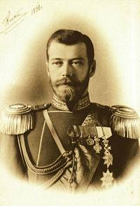
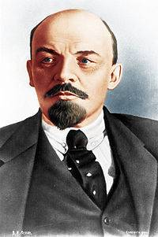
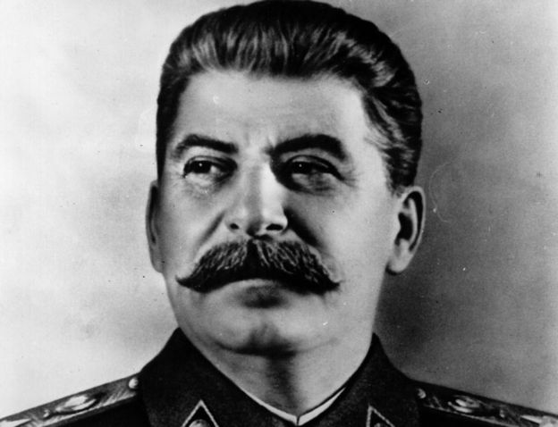
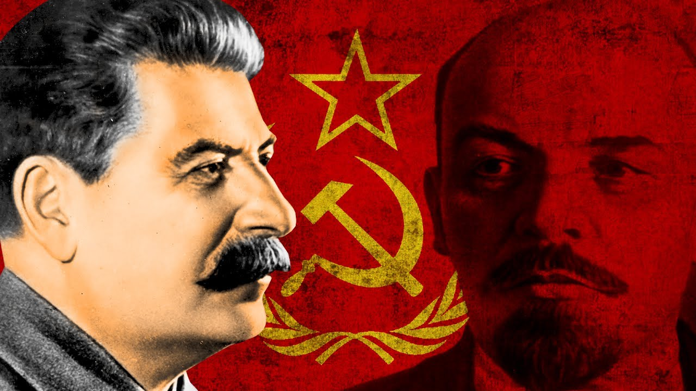

Em 1917, duas revoluções ocorreram na Rússia e impactaram profundamente os rumos do país e dos demais territórios que formavam o antigo Império Russo.
Como consequência imediata, os russos saíram da Primeira Guerra Mundial e um novo governo se instalou. Esse processo é conhecido como Revolução Russa, e foi responsável por causar repercussões não apenas sobre os povos que viviam naquela região, mas ajudou a construir o mundo do século XX.
Até 1917, a Rússia estava sob regime czarista (czar é o termo utilizado para denominar o imperador russo). Embora o regime tenha passado por algumas transformações, em conjunto com a Europa, ao longo dos séculos anteriores, o Império Russo era uma das últimas monarquias absolutistas do continente, atravessado por relações de produção feudais (pré-capitalistas).
Por isso, o regime era tido como um dos mais atrasados da Europa. A ainda escassa industrialização russa era predominantemente realizada com capital estrangeiro, portanto não havia no país uma burguesia forte.
Nesse contexto, mesmo sofrendo forte repressão do czar, as forças de oposição se organizaram em dois partidos principais: um de caráter liberal-burguês, o Partido Constitucional-Democrata (conhecido como “cadete”), e o Partido Operário Social-Democrata Russo (POSDR), de inspiração socialista.
O POSDR, por sua vez, estava dividido em duas vertentes principais. Os bolcheviques (“maioria” em russo), eram liderados por Vladimir Ilitch Ulianov, mais conhecido como Lenin, e defendiam a tomada do poder e implantação do socialismo. Já os mencheviques (“minoria”), acreditavam ser necessário uma etapa burguesa antes da transição ao socialismo.

Czar da Rússia Nicolau II
Nesse cenário, os russos entram no século XX em meio às disputas imperialistas que marcaram aquele período. A Guerra Russo-Japonesa é um importante marco para entender os conflitos que atravessavam o país. Nesta guerra, a Rússia foi vencida pelo Império Japonês pelo controle de territórios coloniais na China e na Manchúria.
Além do confronto militar, a população russa organizou diversas manifestações e greves contra o regime do Czar Nicolau II, o que contribuiu para seu enfraquecimento.
Em um episódio importante, uma dessas manifestações, de caráter pacífico, se dirigiu ao Palácio de Inverno do Czar no dia 22 de janeiro de 1905. A guarda imperial recebeu os manifestantes com armas de fogo, promovendo um massacre que ficaria conhecido como Domingo Sangrento.
A reação do Czar à manifestação popular gerou revolta na população e provocou uma série de manifestações em resposta, inclusive violentas. Embora tenham sido contidas, as rebeliões que se sucederam ao Domingo Sangrento marcaram a decadência de Nicolau II e, posteriormente, seriam classificadas por Lenin como “ensaio geral” para a Revolução Russa.
Depois dos acontecimentos de 1905, uma onda de insatisfação com o regime czarista se abateu pela Rússia, dando força principalmente aos sovietes, conselhos formados por trabalhadores que atuavam nas grandes cidades da Rússia.
Com o início da Primeira Guerra Mundial, as condições de vida da população russa se tornaram ainda mais precárias, e as manifestações contra o Czar cada vez maiores. Em fevereiro de 1917 (de acordo com calendário russo da época) a situação se tornou insustentável.
Em resposta, Nicolau II abdica do trono e é instalado um Governo Provisório, de caráter liberal-burguês. O novo governo era composto por liberais e parte dos socialistas, os mencheviques. A partir de junho, passou a ser liderado por Alexander Kerensky, um advogado de perfil moderado. Esses acontecimentos foram chamados de Revolução de Fevereiro.
Após a derrubada do Czar, Lenin deixou seu exílio na Suíça e partiu novamente para a Rússia. Com a manutenção do país na guerra, o Governo Provisório não foi capaz de cessar as manifestações internas.
Em abril, o líder bolchevique lança as “Teses de Abril”, conjunto de propostas resumidas no slogan “pão, paz e terra”, procurando sintetizar os anseios dos trabalhadores russos e conquistar apoio para uma nova revolução.
Com a continuidade da crise na Rússia, o Governo Provisório não resistiu às pressões populares e Kerensky foi destituído em outubro de 1917 (segundo o calendário russo - e em 7 de novembro segundo o calendário gregoriano).
Os bolcheviques tomam o poder e Lenin é eleito Comissário do Povo, com o objetivo de iniciar a transição para o socialismo.
Contudo, a Rússia ainda estava em guerra, passava por uma grave crise econômica e vivia uma disputa intensa pelo poder. O novo governo bolchevique inicia as negociações com a Alemanha e, em 1918, é assinado o tratado Brest-Litovisk. Deste modo, a Rússia acaba cedendo vastos territórios pelo direito de deixar a Grande Guerra.
Apesar de ter saído da guerra, o povo russo ainda não tinha conquistado a paz. Forças monarquistas partem em ofensiva contra o governo bolchevique, dando início a uma sangrenta Guerra Civil.

1º presidente do Partido Bolchevique e líder da União Soviética Vladmir Ilitch Ulianov Lênin
A Guerra Civil na Rússia envolveu, de um lado, o Exército Vermelho, organizado pelo dirigente comunista Leon Trotsky, e o chamado Exército Branco, formado por forças monarquistas apoiadas por diversos exércitos estrangeiros e opositores do novo regime comunista.
Durante cerca de três anos, um grande número de russos morreu em combate, até que, em 1921, o Exército Vermelho conquista a vitória definitiva.
No entanto, a situação social na Rússia após anos de guerra era crítica. Além disso, a vitória de revoluções socialistas em outros países, como era esperado pelos bolcheviques, não aconteceu.
Tal situação obrigou Lenin e seus aliados a tomarem medidas que não estavam previstas nos planos iniciais, o que, no campo econômico, foi refletido na instituição da NEP (Nova Política Econômica).
A proposta era fazer concessões ao capitalismo, como permitir alguns investimentos estrangeiros e a abertura de pequenos negócios privados, a fim de tentar obter alguma recuperação econômica. A NEP ficou conhecida pelo slogan “um passo para trás e dois para frente”, que procurava sintetizar a ideia de recuo estratégico sem abrir mão dos ideais socialistas.
Em 1922 foi oficialmente fundada a União das Repúblicas Socialistas Soviéticas (URSS), considerado o primeiro Estado socialista da história.
Embora Lenin não estivesse mais em atividade em seus últimos meses de vida - devido a problemas de saúde -, sua morte, em 1924, abriu uma dura disputa interna entre os comunistas.
Josef Stalin, então secretário-geral do Partido Comunista, defendia que a União Soviética buscasse se desenvolver autonomamente, já que a revolução havia fracassado nos outros países europeus.

Josef Stalin
Trotsky, por sua vez, acreditava que a URSS deveria manter os esforços de espalhar a revolução socialista pelo mundo. Stalin sai vencedor da disputa e inicia um processo de isolamento e perseguição a seu opositor, que acaba exilado e, posteriormente, assassinado.
Durante o governo de Stalin, a URSS abriu mão da NEP e baseou seu desenvolvimento na planificação da economia, ou seja, no planejamento estatal da atividade econômica através dos planos quinquenais (elaborados a cada cinco anos).
Dentro de poucos anos, a União Soviética passou de país semifeudal para potência industrial e militar, e sua disputa com o bloco capitalista, liderado pelos Estados Unidos, definiria o mundo após a Segunda Guerra Mundial.

URSS